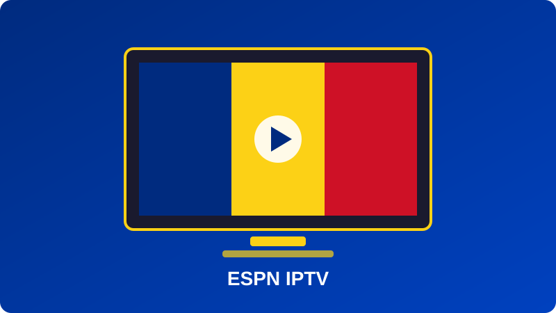
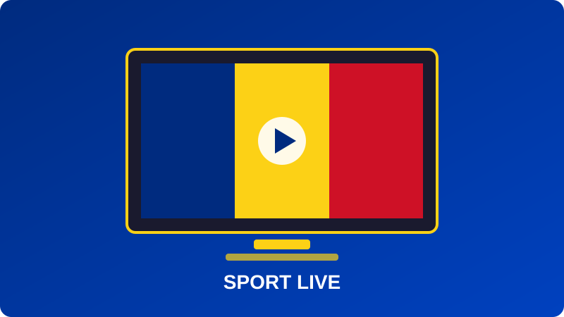

Duminica seara, meciul incepe in zece minute, iar tu inca cauti un loc unde sa-l vezi fara abonamente scumpe si fara sa te lupti cu aplicatii care se blocheaza. Multi oameni scriu in Google espn iptv exact in astfel de momente: vor sport live, calitate buna si un pret rezonabil. Raspunsul nu este mereu simplu, pentru ca drepturile TV difera de la o tara la alta.
In acest ghid explicam clar ce inseamna espn iptv, ce canale de sport poti vedea realist daca esti in Romania sau in diaspora, cum configurezi totul pe televizor, box sau telefon si cum eviti problemele din zilele de meci. Vorbim si despre alternativele europene la ESPN si despre ce sa ceri unui furnizor inainte sa platesti.
Articolul este scris pentru romanii de acasa si din strainatate. Echipa Romania IPTV primeste zilnic intrebari despre sport, iar mai jos le adunam pe cele mai frecvente. Daca vrei o privire generala asupra serviciului, citeste si iptv romania.

Cuprins
- Ce este espn iptv si de ce il cauta lumea
- Cum functioneaza sportul live prin IPTV
- Ce canale de sport poti avea in locul lui ESPN
- Cum configurezi espn iptv pe fiecare dispozitiv
- Calitate: HD, 4K si stabilitate in zilele de meci
- Sport pentru diaspora: acelasi meci, indiferent de tara
- Probleme frecvente la espn iptv si solutii
- Cum alegi un furnizor pentru sport si canale romanesti
- Sfaturi practice pentru o seara de meci fara griji
- Intrebari frecvente
- Concluzie
Ce este espn iptv si de ce il cauta lumea
Expresia espn iptv descrie, in cautarile oamenilor, o idee simpla: vrei sa vezi evenimente sportive transmise de ESPN sau de retele similare printr-un serviciu de televiziune prin internet, in loc de cablu sau satelit. ESPN este un brand american de sport, cu meciuri de baschet, fotbal american, baseball, hochei, MMA si multe altele. Din acest motiv, cautarea apare des la romanii care locuiesc in Statele Unite, Canada sau care urmaresc NBA si UFC din Europa.
IPTV inseamna televiziune livrata prin internet, fara antena si fara parabola. Un serviciu IPTV serios iti ofera o lista de canale pe care o deschizi intr-o aplicatie. Cand cineva scrie espn iptv, de regula vrea doua lucruri: sport live de calitate si un pret mai mic decat un abonament clasic.
Diferenta dintre brandul ESPN si un serviciu IPTV
ESPN este un canal si o platforma, iar IPTV este tehnologia prin care ajunge imaginea pe ecran. Drepturile de transmisie difera de la o tara la alta, deci disponibilitatea unui canal depinde mereu de furnizorul tau. Un furnizor corect iti spune clar ce canale sunt in lista, fara promisiuni vagi.
De ce conteaza locul in care locuiesti
Sportul este licentiat pe teritorii. Ce vezi in Romania poate fi diferit de ce vezi in Germania, Italia sau Spania. Pentru diaspora, important este sa ai o lista care combina canalele romanesti cu sport international, iar acest lucru il discutam in sectiunile urmatoare.
Cum functioneaza sportul live prin IPTV
Pentru a intelege cum merge espn iptv, trebuie sa stii traseul semnalului. Canalul este preluat de furnizor, comprimat si trimis prin internet catre aplicatia ta. Aplicatia il decodeaza si il afiseaza in timp real. Cu o conexiune stabila, intarzierea fata de televiziunea clasica este de cateva secunde.
Ce viteza de internet ai nevoie
Pentru sport, unde miscarea este rapida, recomandam cel putin 10 Mbps pentru HD si 25 Mbps pentru 4K. Daca mai multe persoane folosesc reteaua in acelasi timp, creste marja. Un cablu de retea catre televizor sau box este mereu mai stabil decat Wi-Fi-ul.
De ce conteaza codecul si rata de cadre
Meciurile se vad cel mai bine la 50 sau 60 de cadre pe secunda. Un serviciu bun transmite sportul la rata nativa, nu la una redusa. Acest detaliu face diferenta intre o minge care se vede clar si una care lasa urme pe ecran.
Ce canale de sport poti avea in locul lui ESPN
Daca esti in Romania sau in diaspora europeana, o lista pentru espn iptv ar trebui privita realist. Pentru publicul european, sportul se vede in principal pe canale precum Digi Sport, Eurosport, Prima Sport, Look Sport sau Orange Sport, in functie de drepturile fiecarui sezon. Ele acopera fotbalul intern si international, tenisul, Formula 1, handbalul si multe alte competitii.
| Sport | Unde il gasesti de obicei | Public |
|---|---|---|
| Fotbal intern | Digi Sport, Prima Sport | Romania si diaspora |
| Tenis si ciclism | Eurosport | Toata Europa |
| Formula 1 | Canale cu drepturi regionale | Variaza pe sezon |
| Baschet NBA, MMA | Canale americane precum ESPN | SUA, Canada |
Cum alegi lista potrivita
Scrie ce competitii urmaresti si cere o lista clara. Pentru exemple din categoria de canale, vezi ghidul canale iptv romania. Daca vrei si canale nationale in aceeasi aplicatie, alege un furnizor care le grupeaza intr-un singur abonament.
Alternative pentru publicul din Grecia si Finlanda
Pentru comparatii cu alte piete, poti vedea cum functioneaza serviciile de tip greek iptv si tilaa iptv, care servesc la randul lor comunitati din diaspora.
Cum configurezi espn iptv pe fiecare dispozitiv
Configurarea pentru espn iptv este aceeasi indiferent de ce canale alegi. Primesti de la furnizor datele de acces, le introduci in aplicatie si pornesti lista. Mai jos sunt pasii pe dispozitive.
Smart TV si Android TV
Instaleaza o aplicatie compatibila din magazinul televizorului, alege optiunea de adaugare a listei si introdu linkul primit. Dupa cateva secunde apar categoriile, iar sportul este de obicei grupat separat.
Android box si Fire Stick
Un box dedicat este cea mai stabila varianta pentru sport. Daca esti la inceput, citeste ghidul despre android box iptv pentru recomandari de modele.
Telefon, tableta si calculator
Aplicatiile mobile iti permit sa urmaresti meciul si in deplasare. Pe laptop poti folosi un player pentru liste. Pentru ghidul de program al meciurilor, foloseste si epg iptv, care arata orele transmisiilor.
Cum organizezi lista de sport
Daca vrei sa pastrezi doar canalele de care ai nevoie, un instrument ca editor m3u iptv te ajuta sa elimini categoriile inutile si sa pui sportul primul.

Calitate: HD, 4K si stabilitate in zilele de meci
Cel mai mare test pentru orice espn iptv este seara cu meci mare, cand mii de persoane se conecteaza simultan. Un serviciu slab se blocheaza exact atunci. Un serviciu bun are servere dimensionate pentru varfuri de trafic si canale de rezerva.
Ce inseamna stabilitate reala
Verifica daca furnizorul are mai multe servere, daca iti ofera un link alternativ si cat de repede raspunde suportul. In zilele de meci, un raspuns in cateva minute valoreaza mai mult decat orice promisiune.
Cum eviti buffering-ul
- Foloseste cablu de retea pe televizor sau box.
- Inchide aplicatiile de descarcare in timpul meciului.
- Alege calitatea HD daca viteza nu permite 4K.
- Reporneste routerul inainte de un eveniment important.
Rolul dispozitivului
Un box vechi poate cadea la rezolutii mari. Pentru sport, un procesor modern si memorie suficienta fac diferenta.
Sport pentru diaspora: acelasi meci, indiferent de tara
Pentru romanii din strainatate, espn iptv are un sens aparte. Vrei sa vezi meciul echipei din orasul tau natal, dar si competitiile din tara in care traiesti. Un abonament IPTV iti permite sa combini ambele lumi intr-o singura aplicatie.
Fusul orar si orele de transmisie
Un meci la ora 21:00 in Romania este la 20:00 in Germania si la 19:00 in Marea Britanie. Seteaza corect fusul orar in aplicatie, altfel ghidul de program va arata ore gresite.
Canale romanesti alaturi de sport
Pe langa meciuri, familia vrea Pro TV, Antena 1, Kanal D si stiri. Cand toate sunt in aceeasi lista, nu mai ai nevoie de mai multe abonamente. Mai multe detalii gasesti in articolul dragon iptv, unde comparam si alte tipuri de servicii.
Folosirea pe mai multe ecrane
Verifica de la inceput cate dispozitive suporta abonamentul. O familie cu televizor in sufragerie si telefoane are nevoie de mai multe conexiuni.
Probleme frecvente la espn iptv si solutii
Chiar si cel mai bun espn iptv poate avea probleme punctuale. Iata cele mai intalnite si cum le rezolvi rapid.
Imaginea se blocheaza sau se opreste
Cauza obisnuita este viteza insuficienta sau Wi-Fi-ul slab. Testeaza viteza, treci pe cablu si reporneste aplicatia. Daca apare doar pe un canal, anunta furnizorul.
Canalul nu apare in lista
Actualizeaza lista din aplicatie. Daca lipseste in continuare, canalul poate sa nu faca parte din pachetul tau, iar un raspuns clar de la suport te scuteste de timp pierdut.
Sunetul nu este sincron
Schimba playerul intern sau activeaza setarea de sincronizare a audio. Cele mai multe aplicatii au aceasta optiune in meniul de redare.
Cum alegi un furnizor pentru sport si canale romanesti
Inainte sa platesti pentru un espn iptv, pune cateva intrebari simple. Acestea te protejeaza de dezamagiri si de bani aruncati.
Lista de verificare
- Cere un test gratuit pentru a vedea calitatea in zi de meci.
- Intreaba exact ce canale de sport sunt incluse.
- Verifica daca exista suport in limba romana.
- Cere detalii despre numarul de dispozitive.
- Alege plata flexibila, fara contracte lungi.
De ce Romania IPTV
Romania IPTV se adreseaza publicului vorbitor de romana, cu lista de canale nationale, sport si suport pe WhatsApp. Echipa raspunde in limba ta si te ajuta cu configurarea pe orice dispozitiv. Pentru o privire de ansamblu, citeste si iptv romania si emby iptv pentru a-ti organiza biblioteca media.
Pret si transparenta
Un pret foarte mic fara explicatii este un semnal de alarma. Un furnizor serios afiseaza clar ce primesti si cat costa pe luna sau pe an.
Sfaturi practice pentru o seara de meci fara griji
Un meci important cere pregatire, la fel ca o cina cu invitati. Cu cateva obiceiuri simple, eviti cele mai multe neplaceri si te bucuri de fiecare faza, de la primul fluier pana la ultimul.
Cu o zi inainte
Verifica daca aplicatia este actualizata, daca lista de canale se incarca si daca datele de acces functioneaza. Daca ai nevoie de ajutor, scrie echipei de suport cu suficient timp inainte, nu in ultimul minut. Un test de cinci minute iti poate economisi o seara intreaga de nervi.
Cu o ora inainte
Reporneste routerul si dispozitivul de streaming. Inchide aplicatiile care consuma banda, precum descarcarile mari sau actualizarile automate. Alege canalul de sport si lasa-l sa ruleze cateva minute, ca sa te asiguri ca imaginea si sunetul sunt in ordine.
In timpul meciului
Daca vezi o mica intarziere, nu schimba imediat setarile. Asteapta cateva secunde, pentru ca reteaua se poate stabiliza singura. Daca problema continua, treci pe un canal de rezerva sau scrie pe WhatsApp, unde echipa raspunde rapid si in limba romana.
Dupa meci
Noteaza ce a mers bine si ce nu. Daca ai avut probleme repetate, discuta cu furnizorul si cere o solutie. Un serviciu bun asculta feedbackul clientilor si isi imbunatateste constant infrastructura, mai ales inainte de marile competitii.
Cum iti organizezi abonamentul pe termen lung
Alege o perioada de abonare potrivita obiceiurilor tale. Daca urmaresti sport tot anul, un abonament pe un an iese de obicei mai avantajos decat plata lunara. Daca vrei doar un anumit turneu, o perioada scurta poate fi suficienta. In ambele cazuri, cere un test inainte de plata si pastreaza datele de contact ale suportului la indemana.
Un ultim sfat: nu te baza pe o singura sursa. Tine pe telefon aplicatia instalata ca varianta de rezerva, in caz ca televizorul sau boxul are o problema chiar inainte de startul partidei. Astfel nu pierzi nicio faza, iar familia sau prietenii care vin la meci raman multumiti de organizare si de calitatea imaginii.
Intrebari frecvente
Ce inseamna espn iptv?
Este cautarea celor care vor sa vada sport live, inclusiv canale precum ESPN, printr-un serviciu de televiziune prin internet. Disponibilitatea canalelor depinde de furnizor si de teritoriu.
Gasesc ESPN in lista Romania IPTV?
Lista se concentreaza pe canale romanesti si sport european. Scrie-ne pe WhatsApp si afli exact ce canale de sport sunt disponibile in pachetul tau.
Ce sport pot vedea in limba romana?
Fotbal, tenis, handbal, Formula 1 si alte competitii, pe canale precum Digi Sport, Prima Sport sau Eurosport, in functie de drepturile din sezonul curent.
Ce viteza de internet am nevoie pentru meciuri?
Minimum 10 Mbps pentru HD si 25 Mbps pentru 4K. Pentru stabilitate, foloseste cablu de retea, nu Wi-Fi.
Pot urmari meciurile de pe telefon?
Da. Aplicatiile pentru Android si iOS iti permit sa vezi meciul oriunde, cu aceleasi date de acces ca pe televizor.
Este legal un serviciu IPTV?
Tehnologia IPTV este legala. Important este ca furnizorul sa fie serios si sa respecte regulile din tara ta. Evita listele gratuite si neverificate.
Exista test gratuit?
Da, poti cere un test pe WhatsApp, fara card si fara contract, ca sa verifici calitatea inainte de abonament.
Functioneaza in strainatate?
Da. Serviciul merge in orice tara cu internet stabil, iar diaspora vede aceleasi canale romanesti ca in Romania.
Testeaza gratuit sportul si canalele romanesti
Scrie-ne pe WhatsApp si primesti acces de test, fara card si fara contract.
Cere testul pe WhatsAppConcluzie
Pe scurt, espn iptv este o cautare care ascunde o nevoie clara: sport live stabil, la un pret corect. Disponibilitatea ESPN depinde de furnizor si de teritoriu, dar pentru publicul din Romania si diaspora exista alternative solide pe canale europene de sport, alaturi de toate canalele romanesti preferate.
Pentru o lista clara, test gratuit si suport in limba romana, scrie-ne pe WhatsApp si porneste-ti televizorul cu Romania IPTV. Mai multe ghiduri gasesti in blog.